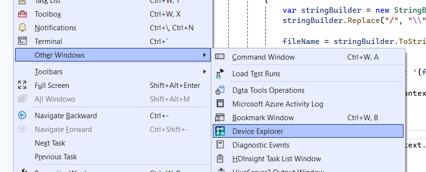
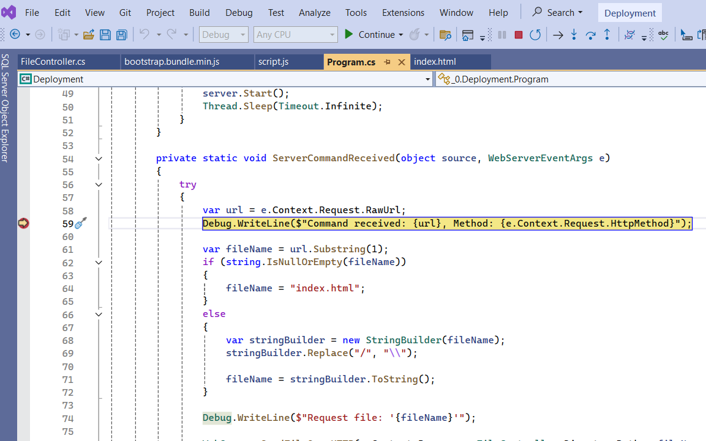
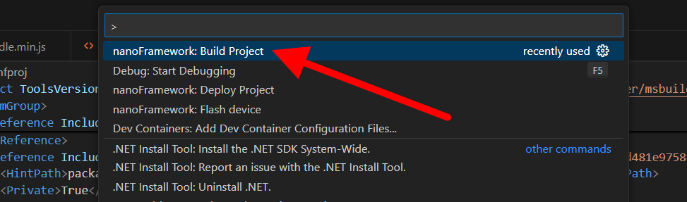
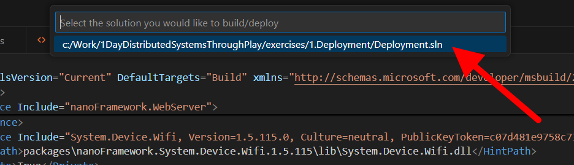
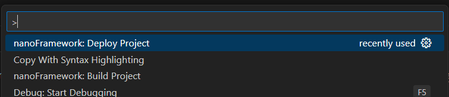
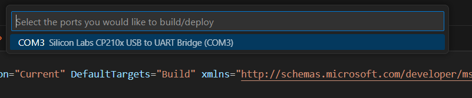
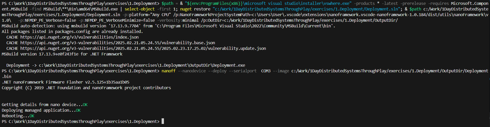

Exercise 1:
Deploy an application
Deploying with Visual Studio
Deploying a NanoFramework application from Visual Studio is typically easy and involves only a few steps:
- Make sure the correct device is selected in the extension
- F5 to run the application
1. Make sure the correct device is selected
The NanoFramework extension for Visual Studio adds a
Device Explorer window with lists any compatible ESP32 devices that are connected
to the computer. To open the window, go to View -> Other Windows -> Device Explorer.

Once this window is open, it will list all compatible devices connected to the computer (in this case, there should only be one). Select the
device you wish to flash. In the example below, the device is connected to
COM3 and is an ESP32_REV3 image.

2. F5 to run the application
Your application is now ready to deploy. Hit F5 to deploy and debug your application. The Visual Studio extension will now compile
your application, deploy it to the selected device, and start debugging. You can use most Visual Studio debugging tools (e.g.
Breakpoints, Quick Watch, Watches, etc.)

3. Success!
If you managed to deploy everything successfully, you should see a message in your debugger:
You have successfully deployed your first NanoFramework application at 01/01/1970 00:08:18
Deploying with VSCode
There are 4 steps to deploying a NanoFramework application to a microcontroller like an ESP32 (which is what we are using during this workshop)
using the vscode add-on. At a summary, these steps are:
- Build the project
- Deploy the project
- Add all Content Files to a deploy.json
- Deploy the files
1. Build the application
Open the

Command Palette (Default shortcut is: CTRL + SHIFT + P) and search for NanoFramework: Build Project. Once found, run that command.The build command will present you with a parameter, asking you which solution you would like to build. Select the

1.Deployment\Deployment.sln solution file.The command will now compile the solution for you, getting it ready to deploy. The build log will look something like this:

Once complete, your solution will be built. Now you need to deploy it.
2. Deploy the application
Open the

Command Palette (Default shortcut is: CTRL + SHIFT + P) and search for NanoFramework: Deploy Project. Once found, run that command.The command will ask you for a parameter, asking you for which solution to deploy. Select the
1.Deployment\Deployment.sln solution file.The command will now ask you for a second parameter: which COM port to deploy to. Select the COM port that the device is plugged into.

Your solution will now be deployed to the device. The output should look something like this:

3. Success!
Congratulations! You have managed to deploy your first NanoFramework application. Now we need to make it do something!
Bonus round!
Done already? Waiting for everyone else to finish? Why not tackle some of these bonus challenges?
1. Connect to the WiFi network
If you're using Visual Studio, you should have noticed that the date that was output by the log statement was very
incorrect. In fact, you might recognise the date (01/01/1970) as one of the typical Epoch dates.
This is because the ESP32 doesn't have a real-time clock to keep track of the date.
NanoFramework manages the date and time of devices by getting the current time once the device connects to a network with a
time server.
2. Modify the CSharp code to allow replacing tokens within the HTML with values from the device
The
program.cs file is where the WebServer class is instantiated. It is this class that handles the HTTP
requests.
The next bonus exercise is to change the code that serves the static content files to replace the token from the previous example
(
%%NUMBEROFREQUESTS%%) with a variable from the server.
Ther server should now keep a running total of the number of files it has served. When the
server.html is requested, the server
must replace the %%NUMBEROFREQUESTS%% token with that running total. The value does not need to update dynamically, but when
then page is refreshed the most up-to-date value should be displayed.
3. Profile the performance of serving static content files
For the last bonus exercise, see if you can come up with a way to measure the performance of the server when serving static content.
See if you can find rough numbers for:
- Number of requests that can be handled concurrently
- Failures per 1000 requests
- Mean kbps
- Does the size of the content files impact the results?
- How would you add caching to the webserver?